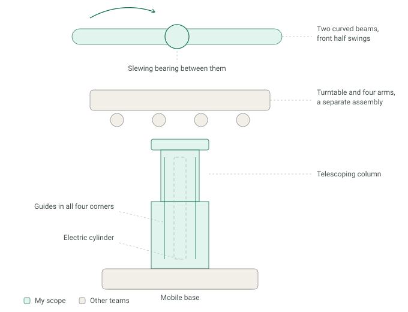
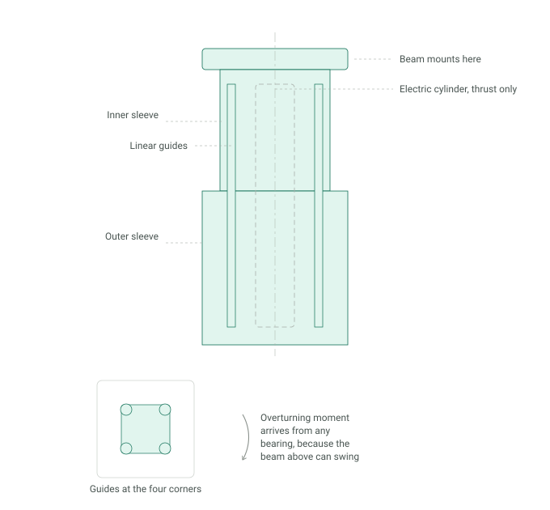
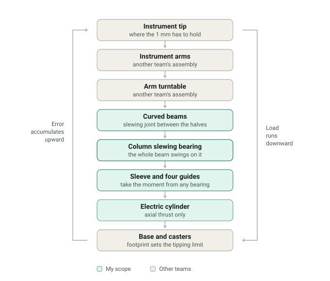

A laparoscopic surgical robot reaches over an operating table, holds position while a surgeon works, and rolls out of the way afterwards. The machine was built by a team. My part was the vertical structure it all stands on and the beam at the top of it.
Under NDA. No drawings, models or product detail appear here. The diagrams are mine, drawn from scratch at the level of arrangement and load path.
Three levels, three teams

The machine stacks three assemblies that belong to different people. At the top, two curved beams joined by a slewing bearing, so the front half can swing through a limited arc and widen the space the arms below can reach. Under that, a turntable carrying the four instrument arms, which another team built. Underneath both, the lift column.
Knowing where those boundaries fall mattered more than it sounds. The numbers in the tolerance chain and the loads at each interface had to be agreed with the people on either side of them, not chosen alone.
Guiding the column
The column telescopes so the machine can set its height to the table and the surgeon, and an electric cylinder raises it. The cylinder provides axial thrust and nothing else — it is not a guide, and it should not be asked to take a bending load.

That leaves the guides to take the overturning moment, and the awkward part is that the moment has no fixed direction. The beam above swings on its own slewing bearing, so the load can sit off to any side depending on where the machine is set up. Two rails in one plane would hold one direction and give way in the other.
So the guides went into the four corners of the sleeve section: two opposed pairs in perpendicular planes, which take the moment wherever it comes from. Whatever height the column is at, the stiffness the arms sit on is the same in every bearing — and that stiffness is what the instrument tip feels.
Selection and suppliers
I chose the electric cylinder and the linear guides, and I did the supplier side of it myself: comparing candidate models against the stroke, thrust and moment requirements, then talking to the manufacturers about build quality, what the specifications actually meant in service, and how the parts behaved in practice rather than on the datasheet. I also checked the design against the applicable ISO standards for surgical devices.
Load path and tolerance chain

The same chain runs both ways. Load goes down it to the floor; positioning error comes back up it to the instrument tip. I ran the tolerance stack-up along that chain to hold roughly 1 mm at the tip — the hardest number in it, because the tip is furthest from the floor and every clearance below has already been multiplied by distance.
The links I owned are the ones that move: a slewing bearing and a sliding sleeve. Both have running clearance by definition, so both spend tolerance that a bolted joint would not.
Working through the build
I produced the part and assembly drawings and integrated the bought-in actuators, bearings and fasteners into them.
The part I would point to is what came after the drawings went out. I spent time on the shop floor with the machinists and the assembly team, looking for what a model does not show: gaps where covers met, binding in the motion, parts that went together on screen and fought each other in the flesh. Some of the analysis behind those fixes was software and some was done by hand on paper — an order-of-magnitude check first, then the detailed version. That habit came from this job and I have kept it.